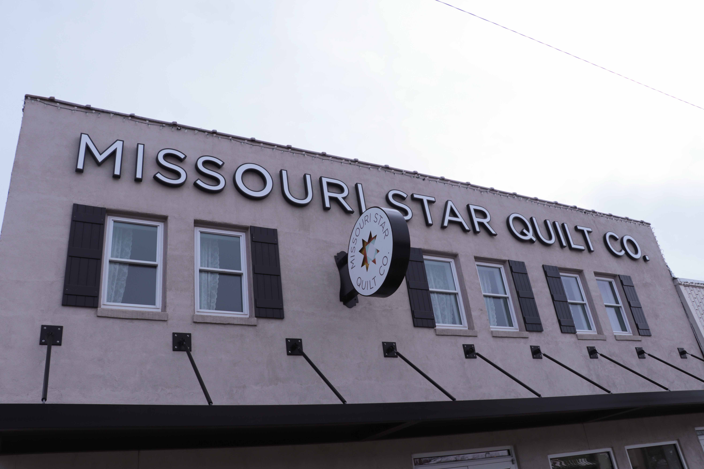

In 2008, the small city of Hamilton was filled with empty storefronts. Those once deserted buildings are now home to the Missouri Star Quilt Company, a local business that sells fabric for quilt making. The company also creates online quilting tutorials. Sarah Galbraith is one of the founders of the popular business and has witnessed the company and community grow over the last decade.
Tina Tan
Missouri Star: The thread holding a city’s economy together
Quilting and tourism bring small businesses in Hamilton to life
Once known as the boyhood home of J.C. Penny, Hamilton is now the destination for quilters from all over the world. On the thread of quilting and tourism, the number of local small businesses is on the rise in this northwest Missouri city.
Last year, over 100,000 tourists visited Hamilton, “Quilt Town, USA,” according to the Hamilton Chamber of Commerce. For the majority, the first stop of the trip is the Missouri Star Quilt Co., a fabric retailer that owns 13 themed shops on the main street.

This storefront is the main building for the Missouri Star Quilt Company in Hamilton, Mo., on Saturday, Feb. 15, 2020, but founder Sarah Galbraith appreciates all of their different buildings. "It gives our customers kind of a fun experience because they get to walk from shop to shop and it gives you like, I call it like a palate cleanser," said Galbraith. | Missouri Business Alert
The Doan family, founders of Missouri Star, started off making quilting tutorials on YouTube and opened their first store in Hamilton in 2008. A 2015 National Small Business Award winner, Missouri Star is widely known by quilters nationally and internationally.
“All of a sudden, you're seeing people come by to visit because they enjoy quilting, for example, and that's the big draw there,” said Alan Spell, a University of Missouri Extension professor.

Missouri Star Quilt Company employee, Janet Urton, is using a paper quilting technique in Hamilton, Mo., on Saturday, Feb. 15, 2020. The stores sell various fabric designs and pieces that customers can create into their own quilt. | Missouri Business Alert
Tourism captivates entrepreneurs’ interests
Not only quilters, but also entrepreneurs, are drawn to this rural community of around 1,800 people. In 2019 alone, the Chamber of Commerce had 10 ribbon cuttings to celebrate the opening of new businesses.
“There’re just a variety [of businesses],” said Bob Lund, a retiree and lifelong Hamilton resident. “Not all of them are related to the quilt company, but I think they're here because of that.”
Dakota Redford, a small business owner in Hamilton, is one of the entrepreneurs that came from outside of the community. She and her family run Home Inn Hamilton Bed & Breakfast, Hamilton Hotel Event Center and Hamilton Quilt Museum. Redford said the fascinating growth and success of Missouri Star was what brought her to the city in 2015.
“My business wouldn't exist, at least to the volume that it does, if it wasn't for the quilt shops that are in town,” she said.
Formerly the owner of a vinyl lettering online business, Redford had a lifelong dream of starting a bed and breakfast.
“I moved to Hamilton specifically to run business here,” Redford said.
Originally from South Jordan, Utah, the Redfords purchased a 15-acre property in 2015 they later converted into the Home Inn Hamilton Bed & Breakfast.
“My guests at the bed and breakfast are quilters, and they come to town specifically to come to the quilt shops,” Redford said. “When they do have an event that is held by Missouri Star, or if there is a retreat, I have every bed full.”
In 2018, Redford opened her second local business, Hamilton Hotel Event Center -- a 7,200-square-foot event hall for 100 people to sew at one time that also provides guest suites.
“We looked at the buses coming into town with no place to stay and we were sending them to outside community,” she said. “To help the economy here in Hamilton, we made those buses stay here.”
Since 2016, Redford has seen about 30% revenue growth each year because of the traffic to the community.
Similarly, the gross income of Dawson Retreats, a vacation home rental company, has grown by about 9% from 2016 to 2019. Anastasia Dawson, owner of Dawson Retreats, said tourists in general made up over 90% of her company’s customer base.
The Dawsons started running their first nightly rental house, The Cottage, in 2016. Each year after that, they added one additional house: The Townhome, and eventually The Villa in 2018. Dawson Retreats now owns three properties.
“Part of Hamilton’s market that’s unique is that it’s a brand new market,” Dawson said. “There weren’t a lot of established businesses.”
Community’s role in the success of small businesses
In Hamilton, small businesses work together through organizations like the Chamber of Commerce and Hamilton Community Alliance to promote their community as a whole.

(From left to right) Hamilton Chamber of Commerce first Vice President, Bob Hughes, President, Christa Horne, and Treasurer, Jacob Farnsworth conducted the commerce meeting in Hamilton, Mo., on Wednesday, Feb. 19, 2020. "We also just kind of skip over the fluff of a lot of the data that a lot of communities like to use to make decisions, and we just go by what we think is best for the community and we wing it," said Hughes. | Missouri Business Alert
“We all work together and share our customer base with one another,” Redford said. “And that does make a big difference.”
Dawson, who is also the treasurer of Hamilton Community Alliance, said they work to grow Hamilton as a team instead of competing as individual businesses.
“A community that recognizes their support, their social infrastructure, their social bonds they build with a situation like this are very important for long-term health [of the economy],” Spell said.
Spell sees the continued growth in employment as another significant impact on the economy in the long run. According to the US Bureau of Labor Statistics, the unemployment rate in Caldwell County decreased to 3.1% in 2018 from 6.7% in 2008.

Economic growth in the comprehensive future
Now the biggest employer in Hamilton, Missouri Star employs around 400 people with half of them living in and around the city.
“Before [the company started], the only people that really lived in Hamilton were people that worked at maybe like the prison or worked in the city that wanted to live in a small town,” City Administrator Jean Van Iperen said.
For small business owners, having an outstanding company like the Missouri Star to depend on is what Spell called “a good problem to have.”
“I don’t see any downsides of it,” Spell said. “Usually, the economy starts out with a handful of strong businesses, and then they get bigger and bigger as populations grow, and more and more diverse industries will get in there.”
In 2018, Redford bought a 3,000-square-foot abandoned high school building that had been vacant since 2007. She remolded it into the Hamilton Quilt Museum, which is the third property she owns.

Dakota Redford bought an abandoned high school building in 2018 and created the Missouri Quilt Museum in Hamilton, Mo., on Saturday, Feb. 15, 2020. “We have made partnerships with the National Quilt Museum in Paducah, Kentucky and...they'll be bringing in their quilts that will rotate out of a permanent gallery,” said Redford. “Every three months, their gallery will rotate with new quilts from the permanent or from the collection of the national quilt museum.” | Missouri Business Alert
Partnering with the National Quilt Museum in Paducah, Kentucky, Redford is working with the community to construct the world's largest quilting museum that showcases the history of quilting in America.
“As we continue to have ideas come across the table, we're always happy to look at those and see if they'll incorporate and bless our businesses,” Redford said.
Redford said she didn’t foresee from the beginning of owning three businesses and being involved in a community like Hamilton.
“Overall I feel that [Missouri Star] has vastly improved the market in Hamilton, but for our town to continue to grow we need some other businesses bringing in tourists as well,” Dawson said in an email.